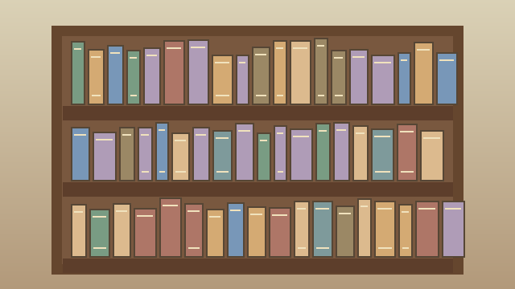

Recursos de la Biblioteca Virtual
Materiales de estudio
Estos son algunos recursos que se pueden utilizar para aprender y hacer tareas.
- Libros digitales
- Videos educativos
- Guías de estudio
- Artículos de investigación

Términos informáticos
- HTML
- Es el lenguaje que se utiliza para crear la estructura de una página web.
- Navegador
- Es un programa que sirve para abrir y visitar páginas de internet.
- Enlace
- Es un texto o imagen que permite ir a otra página.
También puedes revisar material educativo en otras páginas.
Recursos educativos de la UNESCO
Volver al inicio